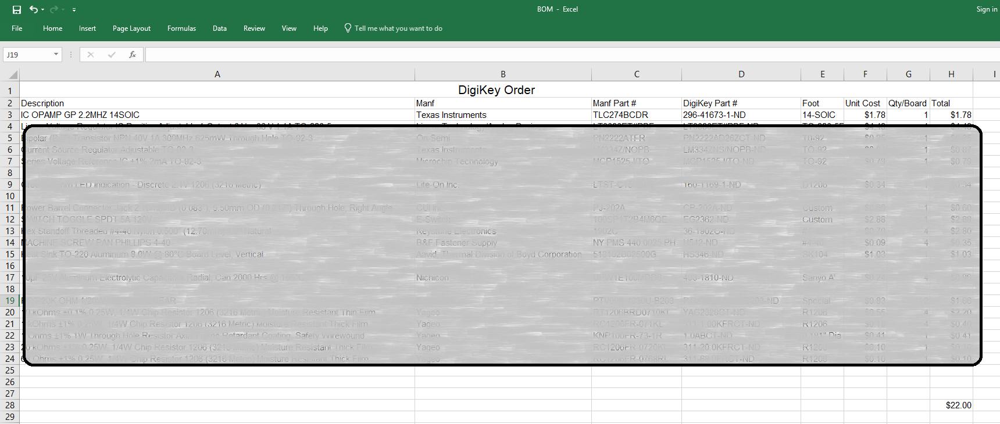
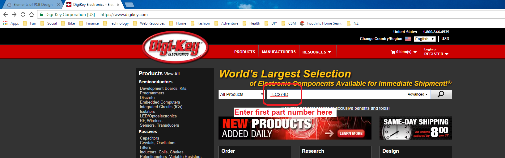

EENG 302
In Lab 10 - Bill of MaterialsRequirements
Working in teams of two, read through the following lab activity and perform all the actions prescribed. You do not need to document bullet items. Make a record of your response to numbered items and turn them in a single copy as your teams "inLab" assignment at the start of next weeks class. Word process your solutions. Include the names of both team members at the top of your solutions. Use complete English sentences when answering questions. If the answer to a question is a table or other piece of art (like an oscilloscope trace or a figure), then include a sentence explaining the piece of art. Only include your answers, do not include the question-text unless it is absolutely needed.Objective
Learn how to build a BOM derrived from the PCB schematic.Copy Lab 9 EAGLE files into Lab 10
I would like to you to keep a copy of the work completed so far in lab09 and use it as a starting point for lab10. To do this:- Create a lab10 folder,
- Launch EAGLE CAD,
- Navigate to the lab09 directory so that you can see the orange "E" for lab09,
- Right mouse click on the orange "E" to the left of lab09,
- Select Copy
- In the Copy directory pop-up, navigate into the lab10 directory,
- Click "Select Folder",
- In the Control Panel, right mouse click on the orange "E" to the left of lab10 (in the lab10 project),
- Select rename,
- Change the name of the project to lab10
- Rename lab10.sch to lab10.sch in the same way,
Eagle BOM
It seems that I spend as much time selecting components for my PCBs than I do laying out the PCB. I guess what I am trying to say is that the parts list for a PCB, called the bill of materials (BOM), represents a significant investiment of time putting a PCB together. So we will put together the BOM for your power supply using the following steps. Before starting, download the 383BOM.xlsx file and store it in your lab10 folder.- Open your BOM excel file,
- Add a new tab and call it EAGLE BOM,
- Launch EAGLE,
- Open the project and open the schematic,
- File → Run ULP…
- In the ULP pop-up:
- Click "Browse…
- Navigate to "C:\EAGLE 9.1.3\examples\ulps\examples"
- select "bom.ulp"
- click Open
- In the EAGLE: Bill of Material pop-up select List type: Values, Output format: CSV,
- Click View,
- In the Eagle: Bill Of Material - Preview pop-up click on any portion of the text and press Ctrl-A to select all the text then press Ctrl-C to copy all the text into a buffer,
- Open Excel,
- Right mouse click on cell A1 (in the EAGLE BOM tab),
- Select Paste - Match Destination Formating (M). This is the clipboard with paper icon,
- Data → Text to Columns,
- In the Convert Text to Columns Wizard Step 1 pop-up, select the Delimited radio button,
- Click next,
- In the Convert Text to Columns Wizard Step 2 pop-up, select Semicolon,
- Click Finish.

Digikey BOM
Each of the items in the Eagle BOM represents an item that you may need to purchase. Note that some of the items in the BOM, like mounting holes, are contained on the finished PCB, so do nbot need purchased.There are significant variations in how BOM's are documented across industry and even for different vendors. My BOM's have a header for each vendor that parts are ordered from. Below the vendor name are the fields that identify cruical information for each part. These include:
- Description
- Manf
- Manf Part #
- DigiKey Part #
- Foot
- Unit Cost
- Qty/Board
- Total

Let's look at one item on our BOM, the TLC274D, and fill in the information using Digikey's parametric serarch. Start by opening a browser and navigating to digikey.com. Enter "TLC274D" into the main search box and hit enter.

No results!? Usually when you get a no-result from Digikey, it means that you have been too specific. So let's simplify the search to the more general "TLC274", leaving off the last character. You should get something that looks like the following image - the particular result you get wil probablly be slightly different as Digikey's inventory changes day-to-day.

Work in super teams of four to divide the task of completing the BOM for our power supply up. Make sure to:
- Get all the resistors from the same vendor and same series,
- Get all parts with the correct footprint,
- Use vernier's to measure the diameter of your capacitors,
- Use Lab 6 and 7 to help get the Digikey part numbers,
- Check if part number information is embedded in the EAGLE part information,
- Make sure that the hex standoff's are just tall enough for the tallest part under the upper acrylic,
- Organize the BOM from top to bottom by ICs, LED, mechanical, capacitors, and resistors,
- Compete a total cost of the board at the bottom of column H.